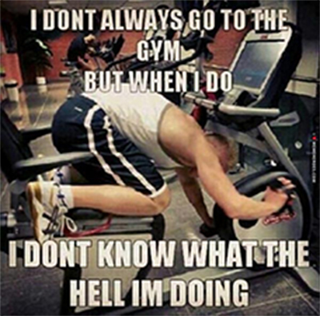
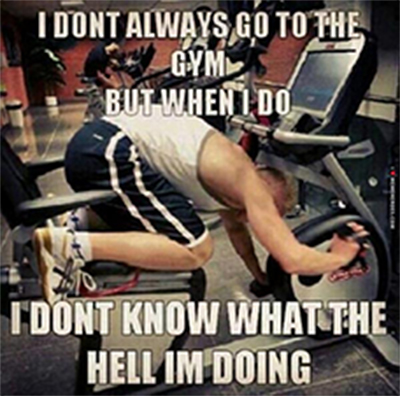

Fitness Terminator
Mr. Olympia titles, Arnold Schwarzenegger was a promising young bodybuilder
Long before he governed the Golden State and outmuscled bad guys on the silver screen, even before he won a then-record seven Mr. Olympia titles, Arnold Schwarzenegger was a promising young bodybuilder who had one glaring weakness (seriously) -- his legs. At 6'2", Arnold knew firsthand the difficulty tall bodybuilders face in bringing up their lower bodies. Rather than accepting this shortcoming, however, Arnold endured the most grueling, even sickening, workouts up to three times a week to build massive tree-trunk thighs worthy of someone nicknamed The Oak. While Arnold did conventional exercises, his training strategy was anything but. He approached leg days with an extraordinary tolerance for pain and dedication to push his body past its physical limits. While anyone can repeat the six exercises that make up his routine, few can duplicate his legs-into-Jell-O intensity. But we're guessing at least a few of you have the cojones to give it a try. That's why, for the first time ever, M&F is publishing the incredibly effective workout and training techniques that completely transformed Arnold'’s legs
 
